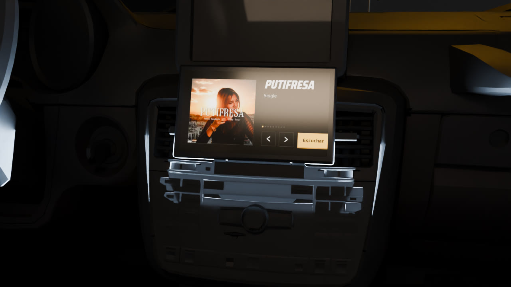
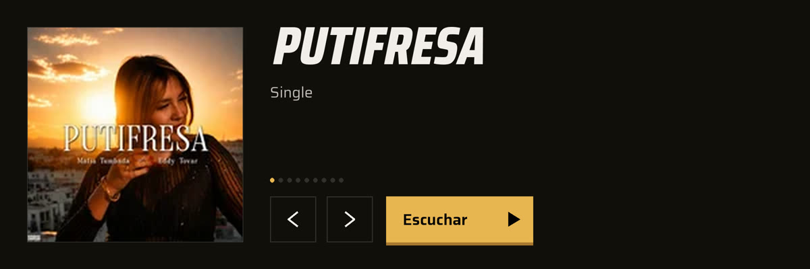
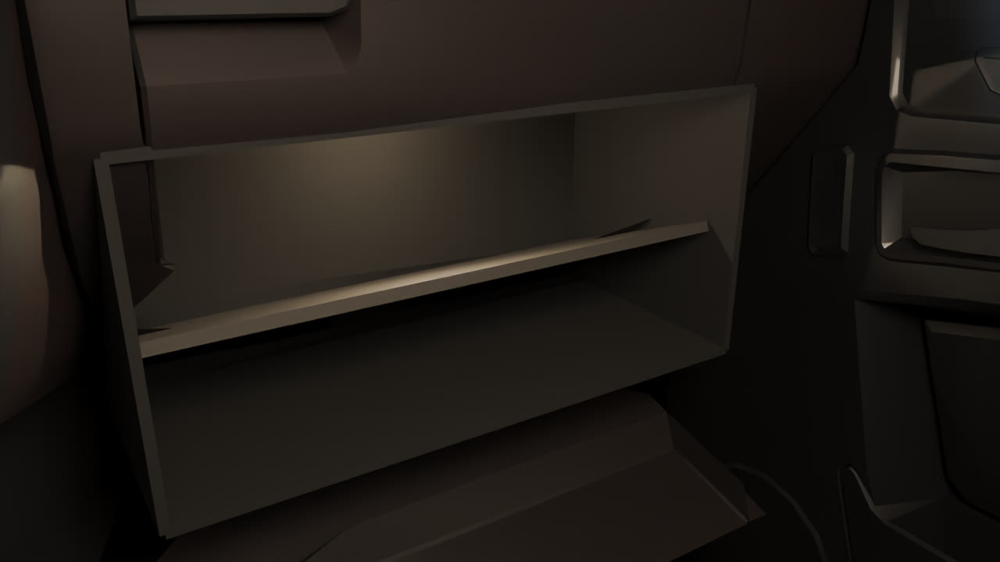
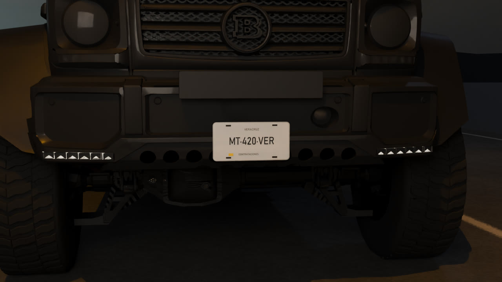
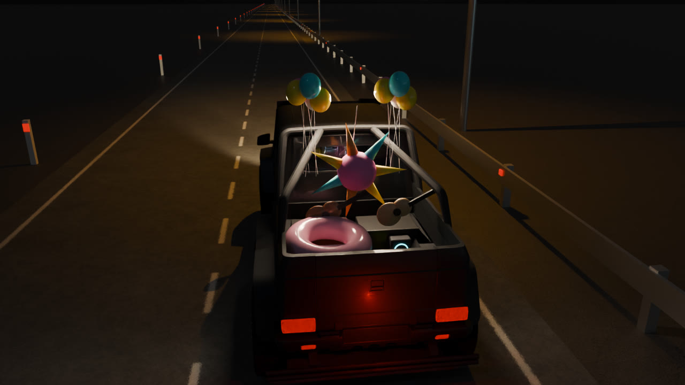

Utilería, ronda 2: elige una por objeto
Lo que pediste en la ronda 1, de noche y con la G63. Responde con la letra de cada objeto (por ejemplo «pantalla A, placa B»). La ronda 1 sigue en su propia página.
Lo que no es final: la placa usa letras de Windows provisionales y sus colores no están comparados con una foto de la placa 2026, porque no encontramos ninguna publicada. Por eso es una versión estilizada, sin escudos y sin código QR. En la caja se ocultó a Alexandro y a Diego, porque en el plan van en el asiento de atrás. En la guantera se ocultó a Héctor.
1 · Pantalla del tablero (en lugar de la radio)
La pantalla muestra la portada y el título; ‹ › recorre los 9 lanzamientos y «Escuchar» es un botón en la pantalla. El casete ya no está. La tecla dorada solo quedaría si cabe sola junto a la pantalla, y en ninguna de las dos cabe bien, así que no aparece.

APantalla ancha flotando sobre el tablero, como las Mercedes nuevas. 
BPantalla empotrada en el tablero, donde la G63 trae su pantallita, como en las Ram nuevas. 
Así se ve la pantalla de cerca, la misma en las dos.


2 · Guantera C, con la puerta cortada del tablero
Ahora la puerta es la de la propia camioneta: se cortó del tablero, gira sobre su borde de abajo y queda abierta a 70°. Adentro hay una caja oscura.

Los bordes del corte, de cerca y sin objetos. 
CCasete suelto, plumillas, la lista arrugada y lentes. Falta corregir: quedaron en un estante dentro de la caja y no sobre la puerta.

3 · Placa A, con el formato de Veracruz
Medidas y forma de la norma (30 × 15 cm, esquinas redondas, cuatro ranuras, letras en relieve). Arriba dice VERACRUZ y abajo hay una franja amarilla, como en la placa del estado. No lleva escudos ni código QR, para que no pase por una placa real.

AMT·420·VER al centro y CONTRATACIONES abajo. BTUMBADA en lugar del número; abajo se repite VERACRUZ, como en la placa del estado.


4 · Caja A, más llena
Siguen la dona, la hielera y la piñata, y se suman una pelota de playa, globos amarrados al arco, otra dona inflable, maracas, una bocina y un sombrero. Todo va en pirámide, con la piñata hasta arriba. Cada opción se ve dos veces: de cerca y desde la cámara de la escena 2, que es la toma que cuenta.

AApilada: la piñata va sentada sobre la hielera y la dona. Desde la escena 2. 
ALa misma, de cerca. 
BColgada: la piñata cuelga del arco y abajo queda una pila baja. Desde la escena 2. 
BLa misma, de cerca.

Ya elegidas, sin foto nueva
Pantalla móvil C (camión con marquesina de focos) y letreros verdes B (bandera desde el acotamiento) quedan anotados en el sistema de diseño. Las calcas mezcladas todavía no se hacen.